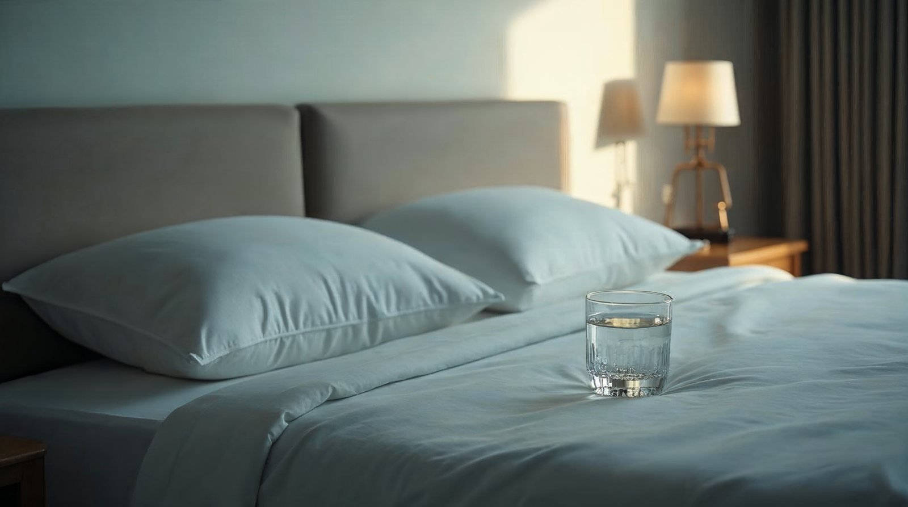
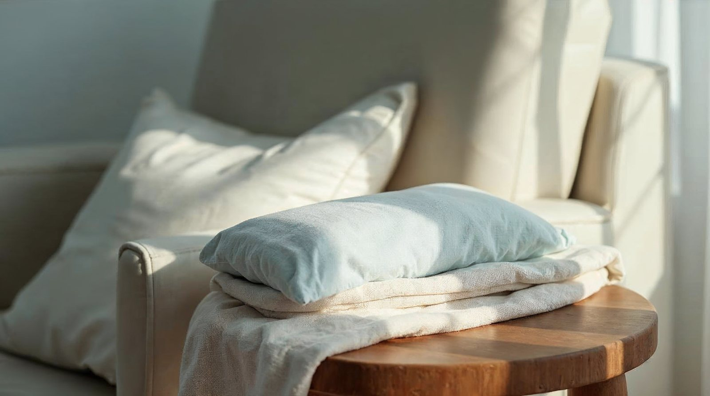
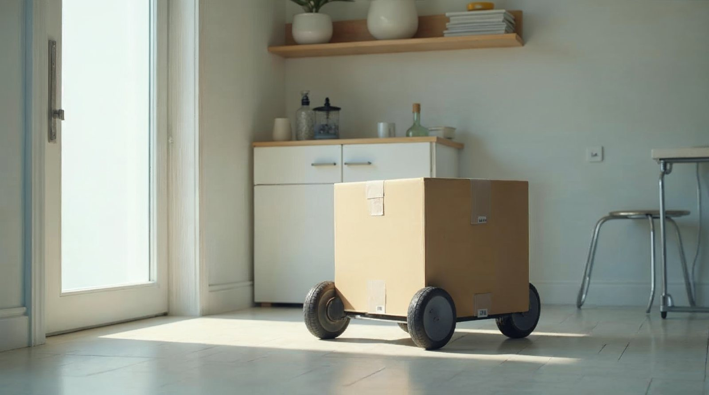
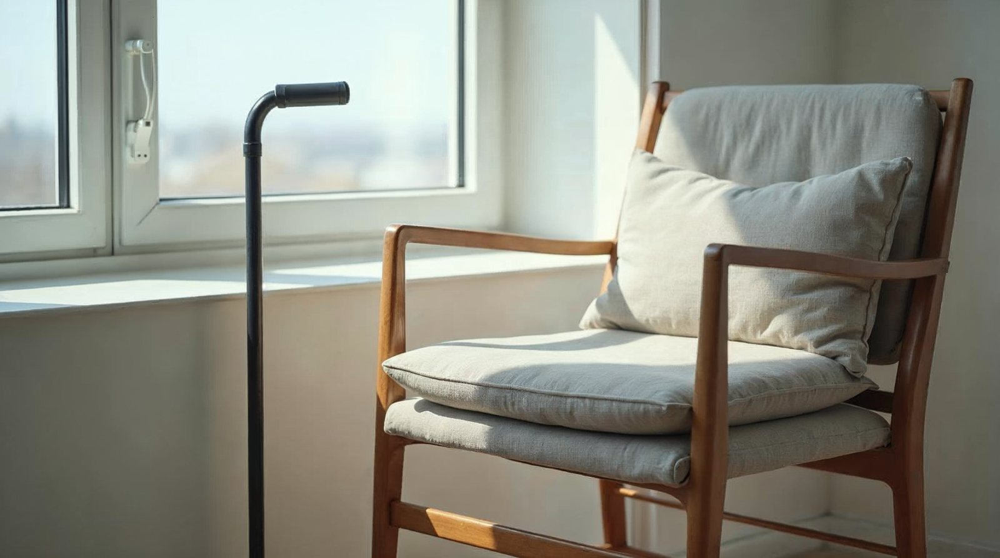

이종호 한의사 감수좋은꿈참사랑한의원 대표원장 (한의사 면허번호 19769)발행 2026-11-26 · 수정 2026-11-26
이 글의 차례
세탁기에서 젖은 빨래를 꺼내려고 허리를 숙이는 순간, '뚝' 하는 느낌과 함께 숨이 멎습니다. 그대로 허리를 펴지 못하고 세탁기 문을 붙잡은 채 한참을 서 있습니다. 겨우 침대까지 기어가다시피 와서 누웠는데, 돌아누울 때마다 허리 아래가 칼로 찌르듯 아픕니다.
흔히 '허리를 삐끗했다'고 하는 급성 요추 염좌는, 허리를 받치는 근육과 인대, 작은 관절이 갑자기 무리한 힘을 받아 놀라고 다친 상태입니다. 처음 하루 이틀은 숨쉬기도 조심스러울 만큼 아플 수 있지만, 많은 경우 며칠에서 몇 주에 걸쳐 조금씩 움직임이 돌아오는 흐름을 보인다고 알려져 있습니다.
다만 다리에 힘이 빠지거나, 대소변을 보기 어렵거나, 사타구니 감각이 둔해졌거나, 열이 나거나, 넘어지거나 부딪힌 뒤 생긴 통증이라면 단순히 삐끗한 것이 아닐 수 있습니다. 이런 경우에는 이 글보다 가까운 응급실이나 척추 진료가 가능한 병원 확인이 먼저입니다.
진료실에 들어오시는 모습만 봐도 압니다. 한 손은 허리를, 한 손은 벽을 짚고, 의자에 앉는 데만 한참이 걸립니다. "이러다 평생 이러는 건 아닐까요?" 하고 물으시는 목소리에 겁이 가득합니다. 그 마음을 잘 압니다. 갑자기 몸이 말을 듣지 않으면 누구라도 무섭습니다.
그럴 때 저는 먼저 지금 아픈 것이 어디서 오는지, 위험한 신호는 없는지를 같이 확인하자고 말씀드립니다. 그것만 정리되어도 마음이 한결 가벼워지는 분이 많습니다. 그다음 첫 며칠을 어떻게 지낼지 함께 정합니다.
왜 허리를 '삐끗'하게 될까요
허리는 다섯 개의 허리뼈가 쌓여 있고, 그 사이를 디스크와 작은 관절, 여러 겹의 인대와 근육이 붙잡고 있는 구조입니다. 평소에는 이들이 힘을 나눠 받으며 숙이고 펴고 비트는 동작을 해냅니다.
그런데 허리를 숙인 채 비틀거나, 준비 없이 무거운 것을 번쩍 들거나, 오래 앉아 굳은 허리로 갑자기 움직이면 어느 한 곳이 감당할 수 있는 힘을 넘어섭니다. 그 순간 근육이나 인대가 미세하게 늘어나거나 다치고, 주변 근육이 더 다치지 않게 하려고 한꺼번에 단단히 굳어 버립니다.
이 '굳어 버림'이 첫 며칠의 큰 통증을 만듭니다. 몸이 허리를 지키려고 스스로 잠근 셈이지요. 그래서 허리가 한쪽으로 휘어 서 있게 되거나, 똑바로 펴는 것 자체가 안 되는 일이 생깁니다.
재채기 한 번, 양말 신기, 세수하려고 숙이기처럼 사소한 동작에서 삐끗하는 분도 많습니다. 그 동작이 원인이라기보다, 그전에 피로와 수면 부족, 오래 앉아 있던 시간, 찬 기운에 이미 허리가 지쳐 있다가 마지막 한 동작에서 터진 경우가 많습니다.
한의학에서는 이렇게 갑자기 허리를 다친 것을 염좌, 섬요(閃腰)라 부르며 기혈이 한곳에 막혀 아픈 모습으로 살펴 왔습니다. 막힌 곳을 너무 세게 풀기보다 흐름을 다시 잇는 쪽으로 접근하는 것이 오랜 원칙입니다.
삐끗한 허리와 디스크는 어떻게 다를까요
삐끗한 허리는 대개 통증이 허리와 엉덩이 위쪽에 머뭅니다. 특정 동작에서 찌르듯 아프고, 누워서 가만히 있으면 덜하며, 다리로 길게 뻗치는 저림은 없거나 엉덩이 정도에서 멈춥니다.
디스크 쪽 신경 자극이 있다면 한쪽 다리, 특히 무릎 아래 종아리와 발까지 띠처럼 저림이 내려가고, 기침이나 재채기를 할 때 다리까지 찌릿하며, 발등이나 발바닥 감각이 둔해질 수 있습니다. 이런 경우는 허리 디스크 초기 신호와 다리 저림은 어떻게 구분하나요?를 함께 보세요.
둘이 처음에는 비슷해 보일 수 있어, 첫 며칠 동안 저림이 생기는지, 내려가는지를 지켜보는 것이 중요합니다. 처음에 없던 다리 저림이 새로 생기거나 다리 힘이 떨어진다면 진찰을 서두르세요.

스스로 점검해 보세요
- 다리로 내려가는 저림이 무릎 아래까지 있는지
- 발끝으로 서기, 뒤꿈치로 서기가 양쪽 똑같이 되는지
- 대소변이 평소와 같은지, 사타구니 감각이 둔하지 않은지
- 열이 나거나 몸이 으슬으슬하지 않은지
- 넘어지거나 부딪힌 뒤 생긴 통증은 아닌지
- 누워서 가만히 있어도 밤새 통증이 점점 심해지지는 않는지
첫 번째부터 여섯 번째까지 하나라도 걸린다면 집에서 지켜보기보다 진찰이나 병원 확인을 먼저 받으세요. 모두 해당하지 않는다면, 대개는 아래 방법으로 첫 며칠을 보내 볼 수 있습니다.
먼저 이렇게 여쭙니다
- 어떤 동작을 하다 아팠나요? '뚝' 하는 느낌이 있었나요?
- 아픈 자리가 허리 가운데인가요, 한쪽인가요, 엉덩이까지인가요?
- 다리로 저림이 내려가거나 힘이 빠지지는 않나요?
- 대소변은 평소와 같은가요?
- 전에도 이렇게 삐끗한 적이 있었나요? 그때는 얼마나 갔나요?
- 요즘 잠과 피로는 어땠고, 오래 앉아 있거나 무거운 것을 드는 일이 많았나요?
- 골다공증 진단이나 드시는 진통제, 혈액을 묽게 하는 약이 있나요?

첫 하루 이틀, 이렇게 지내 보세요
가장 아픈 첫 하루 이틀은 편한 자세를 찾아 쉬어도 괜찮습니다. 바로 누워 무릎 아래에 베개를 두세 개 받치거나, 옆으로 누워 무릎을 살짝 굽히고 무릎 사이에 베개를 끼우면 허리 근육이 조금 덜 긴장합니다.
다만 '완전히 누워만 있기'는 길어야 하루 이틀로 하세요. 오래 누워 있으면 허리 주변 근육이 더 굳고, 다시 일어나기가 더 무서워집니다. 화장실 가기, 부엌까지 걷기처럼 아프지 않은 범위의 짧은 움직임을 조금씩 이어 가시길 권합니다.
침대에서 일어날 때는 바로 몸을 일으키지 마세요. 먼저 옆으로 돌아누워 무릎을 굽히고, 다리를 침대 밖으로 내리면서 팔로 바닥을 밀어 몸을 세웁니다. 통나무처럼 몸통을 한 덩어리로 돌린다고 생각하시면 허리가 덜 비틀립니다.
찜질은 다친 직후 열감이 있고 욱신거리면 차갑게, 하루 이틀 지나 뻣뻣하고 굳은 느낌이 크면 따뜻하게 하는 것이 일반적인 기준입니다. 어느 쪽이 편한지는 사람마다 달라서, 해 보고 편한 쪽을 쓰셔도 괜찮습니다. 피부에 바로 대지 말고 수건을 한 겹 두르세요.
일상에서 먼저 해 볼 수 있는 것
- 아프지 않은 범위에서 하루 여러 번, 몇 분씩 집 안 걷기
- 앉을 때는 허리 뒤에 작은 쿠션을 대고 20~30분마다 일어나기
- 기침·재채기 때 무릎을 살짝 굽히고 손으로 책상을 짚어 허리 받치기
- 바닥 물건은 허리 대신 무릎을 굽혀 줍고, 한동안 무거운 것 들지 않기
- 양말과 신발은 의자에 앉아 다리를 올려 신기
- 통증이 줄어들면 누워서 무릎을 가슴 쪽으로 천천히 당기기처럼 부드러운 움직임부터 시작하기
첫 주가 지나 움직임이 돌아오기 시작하면, 다시 삐끗하지 않도록 생활을 조금 손봅니다. 오래 앉아 있는 분이라면 앉는 시간을 끊어 주는 것이 가장 쉬운 시작입니다. 간격은 오래 앉아 공부하거나 일할 때 허리와 골반은 얼마 간격으로 쉬어 주나요?를 참고해 주세요.
한 번 삐끗한 허리는 같은 자리가 다시 삐끗하기 쉽다는 말씀을 많이 하십니다. 실제로 통증이 사라진 뒤에도 허리를 받쳐 주는 깊은 근육이 바로 제 힘을 되찾지는 않는다고 알려져 있습니다. 통증이 줄었다고 바로 예전처럼 무거운 일을 하기보다, 몇 주에 걸쳐 조금씩 일의 양을 늘려 주세요.

다시 삐끗하지 않으려면
출근을 해야 하는 분이라면 첫 며칠은 앉는 의자부터 살핍니다. 엉덩이를 의자 깊숙이 넣고 허리 뒤에 말아 둔 수건을 대며, 20~30분마다 일어나 몇 걸음 걷는 것만으로도 허리가 다시 잠기는 것을 줄이는 데 도움이 될 수 있습니다. 운전은 통증이 심한 첫 며칠은 되도록 피하세요.
허리를 삐끗한 분들의 이야기를 모아 보면 비슷한 순간이 있습니다. 아침에 막 일어나 몸이 덜 풀린 때, 오래 앉아 있다 갑자기 일어난 때, 허리를 숙인 채 옆으로 비튼 때입니다. 이 세 순간만 조심해도 같은 일을 줄이는 데 도움이 될 수 있습니다.
아침에는 눈을 뜨자마자 허리를 숙여 세수하기보다, 누운 채 무릎을 세워 좌우로 천천히 몇 번 흔들고 일어나 몇 분 걸은 뒤에 숙여 보세요. 밤사이 디스크에 물이 차 허리가 가장 뻣뻣한 때가 아침이라고 알려져 있습니다.
물건을 들 때는 몸에 바짝 붙여, 무릎을 굽혀 다리 힘으로 일어섭니다. 들고 나서 방향을 바꿀 때는 허리를 비틀지 말고 발을 옮겨 몸 전체를 돌립니다. 김장, 이사, 대청소처럼 무거운 일이 몰리는 날은 한 번에 끝내려 하지 말고 나누어 하세요.
한의원에서 함께 살필 수 있는 경우
- 위험 신호 없이 허리를 삐끗해 움직이기 힘든 경우
- 허리가 한쪽으로 휘어 펴지지 않고 돌아눕기가 힘든 경우
- 해마다 비슷한 계절, 비슷한 동작에서 삐끗하기를 반복하는 경우
- 통증 때문에 잠을 설치고 몸이 지친 경우
좋은꿈참사랑한의원에 처음 오시면 다리 저림과 힘, 대소변, 넘어진 일 같은 위험 신호부터 확인하고, 모든 분께 맥을 짚습니다. 그다음 서서 숙이기와 젖히기, 옆으로 기울이기, 누워서 다리 들기를 해 보며 어디서 어떤 동작에 걸리는지 봅니다.
허리와 엉덩이 근육 상태를 볼 필요가 있다고 판단되면 초음파를 함께 씁니다. 신경 증상이 뚜렷하거나 골절 같은 다른 이유가 의심되면 영상 검사가 가능한 병원을 먼저 안내합니다.
그렇지 않다면 침과 약침, 온열 치료 같은 물리치료 가운데 지금 상태에 맞는 방법을 진찰 뒤에 고릅니다. 근육이 굳어 잠긴 시기에는 강한 자극보다 긴장을 덜어 주는 쪽을 먼저 생각하고, 움직임이 조금 돌아오면 골반과 허리 정렬을 함께 보는 추나를 상의하기도 합니다. 고르는 이유와 받으실 때의 느낌을 미리 설명해 드립니다.
삐끗한 초기에는 짧은 간격으로 오시라고 말씀드리는 경우가 많습니다. 처음 며칠은 허리 상태가 하루하루 달라 그때그때 방법을 바꿔야 하기 때문입니다.
이유는 허리를 삐끗한 초기에는 왜 자주 오라고 하나요?에 따로 적어 두었습니다. 움직임이 돌아오면 간격을 넓히고, 다시 삐끗하지 않도록 생활에서 바꿀 것 하나를 같이 정합니다.

이렇게 기록해 오시면 상담이 쉬워집니다
- 삐끗한 날짜와 그때 하던 동작
- 가장 아픈 동작(돌아눕기, 일어나기, 숙이기, 기침)과 가장 편한 자세
- 다리로 저림이 내려가는지, 내려간다면 어디까지인지
- 하루에 걸은 시간, 잠을 깬 횟수
- 전에 삐끗했던 때와 그때 회복까지 걸린 기간
- 드시는 진통제와 다른 약 이름
이런 증상은 먼저 확인이 필요합니다
- 다리에 힘이 빠지거나 발이 끌리는 경우
- 대소변을 보기 어렵거나 참기 힘든 경우, 사타구니·항문 주변 감각이 둔해진 경우
이런 신호가 있으면 한의원보다 가까운 병원이나 응급실을 먼저 찾으세요.
허리가 갑자기 멈춰 버린 날은 하루가 통째로 멈춘 것 같습니다. 출근은, 아이는, 내일 일은 어떡하나 싶은 마음에 통증보다 걱정이 더 클 때도 있습니다. 오늘은 편한 자세를 찾고, 아프지 않은 만큼만 움직여 주세요. 다음에 오시면 오늘보다 어떤 동작이 하나라도 수월해졌는지부터 여쭙겠습니다.
함께 읽으면 좋은 글
- 허리를 삐끗한 초기에는 왜 자주 오라고 하나요?
- 허리 디스크 초기 신호와 다리 저림은 어떻게 구분하나요?
- 추운 아침 재채기 한 번에 허리가 찌릿했을 때는 어떻게 살피나요?
- 아침에 일어나면 허리가 뻣뻣한 것은 왜 그런가요?
- 오래 앉아 공부하거나 일할 때 허리와 골반은 얼마 간격으로 쉬어 주나요?
여쭙는 것
- 어떤 동작을 하다 아팠나요? '뚝' 하는 느낌이 있었나요?
- 아픈 자리가 허리 가운데인가요, 한쪽인가요, 엉덩이까지인가요?
- 다리로 저림이 내려가거나 힘이 빠지지는 않나요?
생활에서 해 볼 것
- 아프지 않은 범위에서 하루 여러 번, 몇 분씩 집 안 걷기
- 앉을 때는 허리 뒤에 작은 쿠션을 대고 20~30분마다 일어나기
- 기침·재채기 때 무릎을 살짝 굽히고 손으로 책상을 짚어 허리 받치기
한의원에서 함께 살필 것
- 위험 신호 없이 허리를 삐끗해 움직이기 힘든 경우
- 허리가 한쪽으로 휘어 펴지지 않고 돌아눕기가 힘든 경우
- 해마다 비슷한 계절, 비슷한 동작에서 삐끗하기를 반복하는 경우
먼저 확인이 필요한 신호
- 다리에 힘이 빠지거나 발이 끌리는 경우
- 대소변을 보기 어렵거나 참기 힘든 경우, 사타구니·항문 주변 감각이 둔해진 경우
한눈에 보는 표
| 구분 | 핵심 |
|---|---|
| 여쭙는 것 | 어떤 동작을 하다 아팠나요? '뚝' 하는 느낌이 있었나요? 아픈 자리가 허리 가운데인가요, 한쪽인가요, 엉덩이까지인가요? |
| 생활에서 해 볼 것 | 아프지 않은 범위에서 하루 여러 번, 몇 분씩 집 안 걷기 앉을 때는 허리 뒤에 작은 쿠션을 대고 20~30분마다 일어나기 |
| 한의원에서 함께 살필 것 | 위험 신호 없이 허리를 삐끗해 움직이기 힘든 경우 허리가 한쪽으로 휘어 펴지지 않고 돌아눕기가 힘든 경우 |
| 먼저 확인이 필요한 신호 | 다리에 힘이 빠지거나 발이 끌리는 경우 대소변을 보기 어렵거나 참기 힘든 경우, 사타구니·항문 주변 감각이 둔해진 경우 |
자주 묻는 질문
허리를 삐끗하면 며칠 누워 있어야 하나요?
아주 아픈 첫 하루 이틀은 편한 자세로 쉬어도 괜찮지만, 그 뒤로는 아프지 않은 범위에서 조금씩 걷는 편을 권합니다. 오래 누워 있으면 허리 근육이 더 굳을 수 있습니다.
찜질은 차갑게 하나요, 따뜻하게 하나요?
다친 직후 열감이 있고 욱신거리면 차갑게, 하루 이틀 지나 뻣뻣함이 크면 따뜻하게 하는 것이 일반적인 기준입니다. 해 보고 편한 쪽을 쓰셔도 되며, 피부에 바로 대지 않습니다.
허리를 삐끗했을 때 바로 추나를 받아도 되나요?
진찰에서 위험 신호와 아픈 방향을 먼저 확인한 뒤 정합니다. 근육이 심하게 잠긴 첫 며칠은 강한 교정보다 긴장을 덜어 주는 방법을 먼저 생각하는 경우가 많습니다.
엑스레이나 MRI를 먼저 찍어야 하나요?
위험 신호가 없는 급성 요통은 증상과 진찰로 먼저 경과를 보는 경우가 많습니다. 넘어진 뒤 생긴 통증, 골다공증, 다리 힘 빠짐, 열이 있다면 영상 검사가 가능한 병원을 먼저 찾으세요.
자꾸 같은 자리를 삐끗하는데 왜 그런가요?
통증이 사라진 뒤에도 허리를 받치는 깊은 근육의 힘과 움직임이 바로 돌아오지 않는 경우가 있습니다. 앉는 시간, 들어 올리는 방법, 피로와 잠처럼 반복되는 계기를 함께 찾아보길 권합니다.
좋은꿈참사랑한의원은 재진 때 지난번 이야기부터 이어서 여쭙니다. 진료시간과 예약은 오시는 길에서 확인하세요.
어디서 상담받을 수 있나요?
좋은꿈참사랑한의원은 서울 동작구 만양로2길 2 신성빌딩 3층·5층(서울 동작구 상도동, 7호선 상도역 3번 출구 근처)에 있습니다. 한의사 3명(이종호 대표원장, 조영기 수석진료원장, 정원영 진료원장)이 진료합니다. 진료시간은 평일 09:30~20:00(점심 13:00~14:00), 토·일·공휴일 09:30~15:00이며, 방문 전 전화로 확인을 권합니다. 예약은 네이버 예약, 카카오톡 상담, 전화 02-815-7510로 받습니다.
이 글은 일반적인 건강 정보이며 개인의 진단이나 치료를 대신하지 않습니다. 증상이 있거나 복용 중인 약이 있다면 진료를 통해 확인하세요. 치료 효과는 개인마다 다를 수 있습니다.
작성 기준: 일반적으로 알려져 있는 건강 정보를 참고해 정리했습니다(대표원장 감수). 증상 기록은 1~2주 동안 하루 1회, 비슷한 시간에 적어 오시면 지난 상태와 비교하기 쉽습니다.